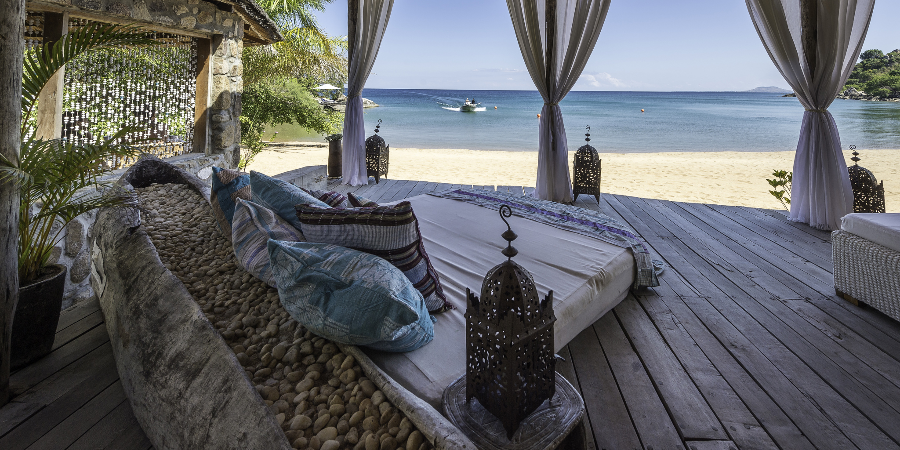
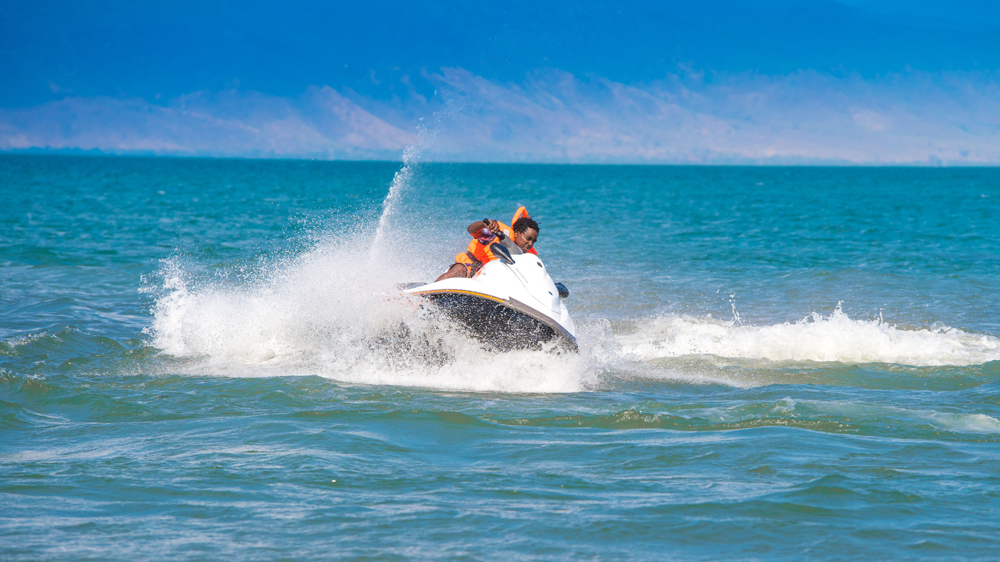

Beaches & Resorts
Relax on Lake Malawi’s golden sandy shores, lined with palm trees and peaceful resorts.
From luxury lodges to backpacker hostels, the lake offers a perfect retreat for sunbathing, swimming,
and enjoying the calm tropical setting. Evening sunsets over the water paint the sky with breathtaking colors,
making the beaches an unforgettable escape.
Many resorts also offer lake-view dining and traditional Malawian hospitality.

Water Adventures
Dive into crystal-clear waters to explore colorful cichlid fish, kayak along the shoreline, or sail between islands.
Lake Malawi is a paradise for snorkelers, divers, and adventure seekers who want to experience the magic beneath the waves.
For thrill-seekers, activities like windsurfing, paddleboarding, and boat cruises add excitement.
Calm, warm waters ensure year-round fun for both beginners and experienced adventurers.

Nature & Wildlife Parks
Discover Lake Malawi National Park, a UNESCO World Heritage Site, home to unique fish species, hiking trails, and stunning viewpoints.
The surrounding woodlands and hills are perfect for spotting wildlife and enjoying eco-tourism. Visitors can encounter monkeys, exotic birds,
and even hippos in nearby wetlands.
The park combines natural beauty with scientific importance, protecting one of the richest ecosystems on Earth.

Culture & Festivals
Experience Malawi’s warm culture through vibrant music, traditional dances, and the world-famous Lake of Stars Festival.
Local fishing villages around the lake also offer a glimpse into daily life and centuries-old traditions.
Handcrafted canoes, bustling markets, and smiling faces reflect the heart of Malawian culture.
Festivals bring together artists, visitors, and locals in celebrations of art, community, and the spirit of the lake